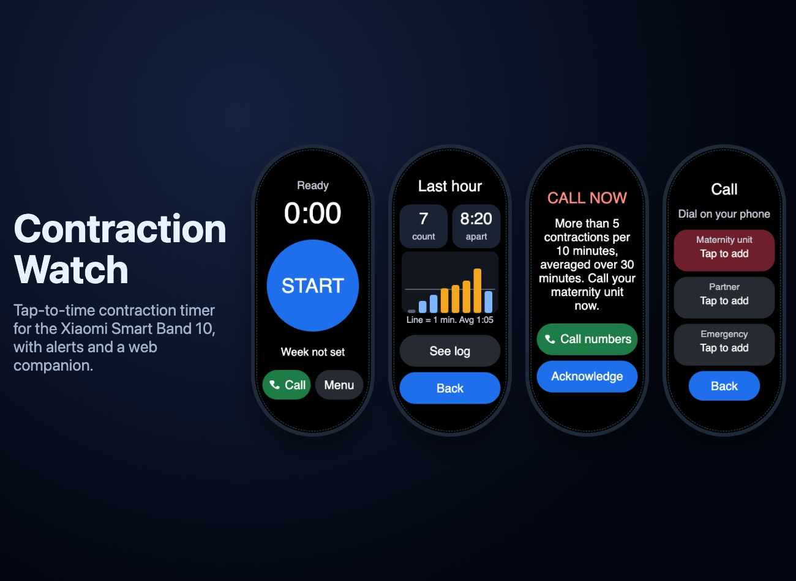

Install Contraction Watch on your Xiaomi Smart Band 10
A contraction timer that runs on the band: tap START and STOP for each contraction. It vibrates when a pattern needs a call, and shows your call numbers in large digits.
Not a medical device. It is not clinically validated. The band cannot sense contractions, and it checks its alerts only while the app is open. If something feels wrong, call your maternity unit, whatever the band shows.

Download the band app (.rpk)
Version 0.3.0, about 30 KB. Only for the Xiaomi Smart Band 10: other models have a different screen.
Try the web demoXiaomi offers no official way to install your own apps, so this uses community tools that are not made by Xiaomi. They need your band's auth key. Never share the key or post it online, because anyone with it may be able to connect to your band. Do not unpair or reset the band in Mi Fitness, because that changes the key.
Choose your phone
You need iOS 26.1 or later, a computer with Chrome to get the key, and the band paired with Mi Fitness. These steps worked on a Smart Band 10.
- Install AstroBox from the App Store: apps.apple.com/app/id6785374105. It is a third-party tool, not made by Xiaomi.
- Download the app file with the button above, in Safari, and save it in Files. You can also download it on a computer and AirDrop it.
- Get the band's key. On a computer, open miband.trinh.uk in Chrome. Choose Get it automatically with your Xiaomi account, scan the QR code with the iPhone and sign in with your Mi Fitness account. Copy the 32-character key to a private note on the iPhone. Do not press Connect on that page.
- Free the band. Swipe Mi Fitness away in the app switcher. On the band, open Settings > System > Connect to new phone. If the band warns about a reset or erasing data, cancel.
- Connect. In AstroBox, add the band with Manual Authkey, paste the key and accept the prompts on both devices. If you see TargetRejected, forget the band in iPhone Settings > Bluetooth, not in Mi Fitness, and try again.
- Install. In AstroBox, open the band, then Quick Apps > Install RPK, and pick
contractions-band-0.3.0.rpk. Keep the band close until it finishes. - Finish. Open Contractions on the band, then reopen Mi Fitness.
For a Smart Band 10 paired with Mi Fitness on Android. Pick one option.
Option A: AstroBox (free)
- Install AstroBox from astrobox.online/en/downloads. Android asks you to allow installs from your browser.
- Download the app file with the button above. It goes to Downloads.
- Get the band's key in either of these ways:
- Use the QR sign-in at miband.trinh.uk on a computer, as in the iPhone steps.
- Let Mi Fitness sync. Connect the phone to a computer by USB as a file transfer device, and copy the logs from
Android/data/com.mi.health/files/log/. Search them forencryptKey=and use the last 32-character match.
- Free the band. Open Settings > Apps > Mi Fitness > Force stop. On the band, open Settings > System > Connect to new phone.
- Connect. In AstroBox, add the band with Manual Authkey and accept the prompts. If you see GATT error 133, Mi Fitness is still running: force-stop it again.
- Install. Open the band, then Quick Apps > Install RPK, and pick the file.
- Finish. Open Contractions on the band, then reopen Mi Fitness.
Option B: Notify for Xiaomi (paid)
- Install Notify for Xiaomi from Google Play and pair it with the band, following its own setup.
- Download the app file with the button above. Keep the
.rpkextension. - Open the file with Notify. Check that it says Valid app file, then tap Install and wait for Update completed.
After installing
- Do the tutorial, which opens the first time. Menu > How it works replays it.
- Set your pregnancy week in Menu > Settings. Until you do, the app uses the stricter preterm rules.
- Add your numbers under Call: maternity unit, partner and your local emergency number.
- Test it. Log a practice contraction, then close and reopen the app to check it was saved. Turn on a symptom to feel the vibration, then turn it off.
Updating and troubleshooting
| Situation | What to do |
|---|---|
| A new version is out | Install it the same way. Do not remove the old one first, or the log may be lost. |
| The band restarts, or the app disappears after opening | Do not install it again. The firmware removes an app that crashed it. |
| "Wrong auth key" | Get the key again. If the page shows two keys, try the other one. |
| The band never shows up | Turn Bluetooth off on any other phone the band knows, and close Mi Fitness. |
AstroBox, MiBand Hack and Notify for Xiaomi are independent tools, not made by Xiaomi or by me. Use them at your own risk.